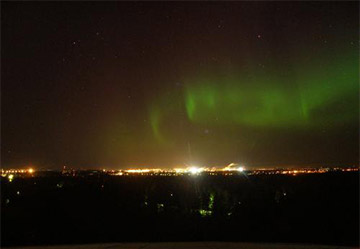
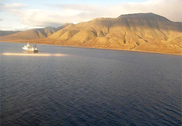
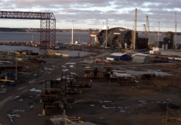

Vogon-IT
Vogon-IT specializes in sequence photography and associated systems, such as database system for image storage, analysis, manipulation and video production.
About
Vogon-IT Oy develops and manufactures computer controlled photography systems customized based on customer needs. Our goal is to produce a photography device with a connected information storage platform to combine digital photography with time and location information. We also provide traditional webcam solutions and remote sensing consultation.
Our Background
The Vogon-IT builds on the heritage of karhukamera project, which has been succesfully
collecting time-lapse images since 2005. The expertise of our team ranges from traditional IT-support to hard core science in remote sensing.
Time-lapse is predicted to become a wide-range observation tool for everything from a weather camera to a tool for industrial observation and scientific research.
Ulvila Observatory

Ulvila Observatory time-lapse camera has photographed the Pori city horizon since 2005 and it has been taken over 3 million photography. The camera is sealed in a weatherproof box made of stainless steel and the temperature in the box is kept stable with a resistor element that is controlled by a thermostat.
RV Lance

The prototype of our ship camera system was installed on RV Lance for a cruise in the Fram Strait during August and September 2007. The simple system provided photos from more than 90% of the cruise, including several days of photos from the marginal ice zone of Greenland.
FMI Camera

The marine research unit of the Finnish Meteorological Institute uses a ship based time-lapse unit to support geophysical studies. The unit is designed for easy installation to different research vessels, such as RV Aranda.
Technip Camera

Technip camera is more traditional web camera system which enables live video streaming from offshore construction site in Pori (Finland) for use of Technip and associates.